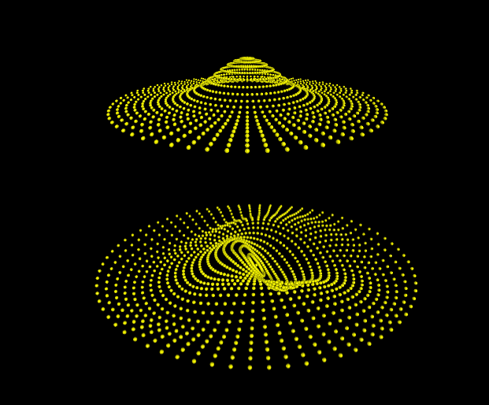
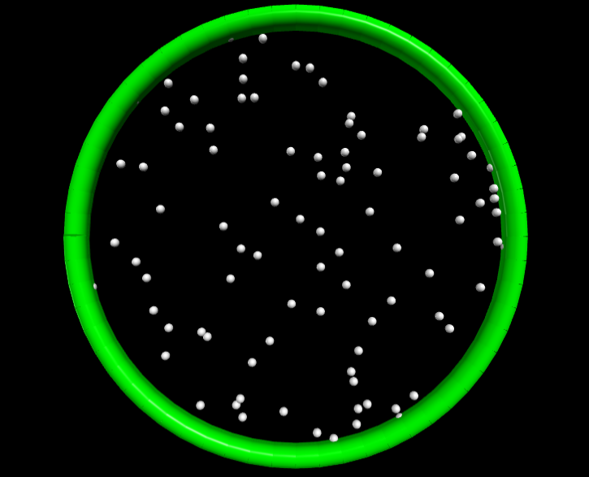
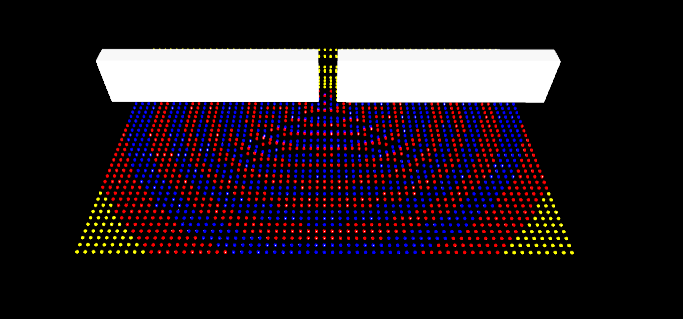
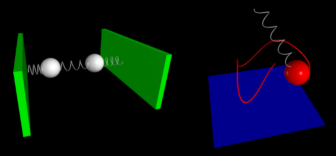
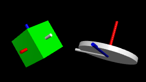

Physics Simulations using VPython
First published: August 6th 2025
Author: Pedro Cunha
In this link you can find a collection of simple numerical simulations I have built using Visual Python (VPython). They run directly in your browser, with no installation required!
Below you can find a brief description of some simulations you will find there. These were originally built for teaching, exploration, or just for fun, and I hope others will find them useful or inspiring.
Vibrating drum membrane

On this webpage you will find an interactive simulation of a two-dimensional elastic membrane - like the surface of a vibrating drum.
The model represents the membrane as a grid of mass points connected by elastic springs. Each point interacts only with its immediate neighbors, exerting vertical forces based on the difference in vertical displacement between them. This mimics the behavior of an elastic surface: you can think of it as vertical springs (satisfying Hooke’s law) linking adjacent points on the surface.
In the picture above the boundary of the surface is fixed, as it would be in a real drum. Even this simple discrete approximation leads to realistic and visually compelling oscillatory behavior.
You can explore a variety of configurations on the main simulation page, including different membrane shapes, oscillation modes, and boundary conditions - such as membranes with free edges.
Ideal gas

On this webpage you can also find a simple simulation of a two-dimensional ideal gas confined in a circular container. The gas consists of many small particles (shown in gray), moving freely and bouncing off the green circular wall. The particles do not interact with each other - only with the container.
Each time a particle hits the wall, it exerts a small force. When many particles collide over time, these tiny forces add up to produce a collective pressure on the wall. In this two-dimensional (2D) setup, the pressure has units of force per unit length (instead of force per area as in 3D), and it can be calculated by tracking the momentum transferred to the boundary during collisions.
The speed of the particles is set according to the Equipartition Theorem, which is a fundamental result from statistical physics. In a nutshell, this theorem tells us that, in thermal equilibrium, each degree of freedom contributes an average energy of \(kT/2\), where \(k\) is the Boltzmann constant and \(T\) is the temperature of the gas.
In this case, the particles move only in two dimensions and do not rotate, and so they have two degrees of freedom (motion in \(x\) and \(y\) directions). That means each particle carries an average kinetic energy of \(kT\).
From this, we can find the average particle velocity \(v\): \[ v=\sqrt{\frac{2kT}{m}}\,,\] where \(m\) is the mass of each particle. This equation links the microscopic motion of particles to the macroscopic concept of temperature. In the simulation we can numerically verify that the gas obeys the expected ideal gas law in two-dimensions: \[PA = nkT\,,\] where \(A\) is the area of the circular container (the 2D analog of volume), and \(n\) is the number of particles in the gas.
Wave diffraction through a slit

On this webpage you will find a simple simulation of wave diffraction, which is the bending and spreading of the wavefront as they pass through an opening. In this case, we model plane waves (like ripples on a lake surface) encountering a wall with a single narrow slit.
For a bit of context, when a wave passes through a small aperture that is comparable in size to its wavelength, its wavefront no longer travels strictly in a straight line: instead, it spreads out in a circular pattern on the other side of the opening.
In the simulation, we consider a 2D array of point particles (shown in yellow), which oscillate vertically. Each particle interacts elastically with its immediate neighbors, with the force it feels being proportional to the difference in vertical displacement between adjacent points. This simple setup mimics how disturbances propagate across a surface.
We consider a plane wave traveling toward a white wall that blocks further propagation, except at a single slit in the center. The wave passes through this opening, producing circular wavefronts that radiate outward: a clear manifestation of diffraction in action.
To help with the visualization, vertical displacements are coded via color: particles above the rest position are shown in red, and those below are blue. This makes the alternating wave crests and troughs easy to follow, and beautifully illustrates how a simple interaction rule gives rise to rich and familiar wave phenomena.
Balls with springs

This section explores simple mechanical systems involving masses connected to springs: simple classic setups that reveal surprisingly rich dynamics through basic principles.
On this simulation webpage two masses (represented by white spheres) are connected to three springs, with the outer ends of the springs anchored to fixed walls. The middle spring couples the motion of the two masses, so that when one oscillates, it influences the other.
To introduce an asymmetry, the mass on the left is made ten times heavier than the one on the right. This difference in mass leads to uneven oscillatory behavior. The simulation illustrates features of coupled harmonic systems, in a clear and intuitive way.
In another simulation, found here, a spring pendulum system is modeled, with a mass suspended from a fixed point by a spring, free to move in three dimensions.
The dynamics of the spring pendulum combine both vertical spring oscillations and horizontal pendulum-like swings, resulting in a rich, coupled motion. A thin red line traces the path of the mass over time, which helps to visualize its trajectory. This classic system beautifully illustrates the complexity that can arise from simple forces acting in more than one direction.
Rotating disk and cube

Rotating a rigid object is straightforward when the rotation happens around one of its symmetry axes. In such cases, the angular momentum \(\vec{L}\) vector points in the same direction as the angular velocity \(\vec{\omega}\). But what happens when the rotation is not aligned with a symmetry axis?
In general, a rigid body has different moments of inertia depending on the chosen axis of rotation. These moments are not necessarily the same in all directions. To capture this directional dependence, physicists use the moment of inertia tensor \(I\), which is a mathematical object (specifically, a \(3\times3\) matrix) that encodes how the body’s mass is distributed in space with respect to all possible rotational axes.
The angular momentum \(\vec{L}\) is related to the angular velocity \(\vec{\omega}\) through the inertia tensor \(I\) via: \[ \vec{L} = I \,\vec{\omega}\,,\]
In the generic case both \(\vec{L}\) and \(\vec{\omega}\) are vectors, and \(I\) is a tensor (that can be expressed as a matrix), meaning that \(\vec{L}\) and \(\vec{\omega}\) might not be aligned.
This has interesting consequences: even in the absence of external forces or torques, the angular velocity vector may precess (change direction), while the angular momentum remains constant in inertial space. This motion is characteristic of objects rotating around axes that are not principal axes of inertia.
To visualize this, you can explore two examples of rigid body rotations in the following simulations:
In both cases, the blue arrow represents the conserved angular momentum vector, while the object rotates in such a way that its angular velocity is not aligned with it. This illustrates how the dynamics of rigid body rotations can be unintuitive beyond simple symmetric cases.